Master System - Phantasy Star não salva mais
:::. Por Agrobel
O nosso amigo Agro fez um baita post para o forum Sega Brasil, relatando uma solução simples para um problema bastante comum em cartuchos que utilizam baterias, pois não raro o contato inferior da bateria (o do polo negativo) desgruda e provoca a perca de saves. Confiram o artigo abaixo, originalmente postado em 18/12/2009, nesse lugar.
_________________________________________________________________
É, senhores, a história de hoje tem um final feliz (mais feliz ainda para alguns). Semana passada comprei um Phantasy Star de Master System que, segundo o anúncio, não estava mais salvando. O cartucho chegou na terça-feira, mas só o peguei ontem, porque aqui no meu condomínio as encomendas ficam na administração que, por sua vez, fecha às 17h. A idéia original era pegar esse Phantasy Star para trocar a parte plástica de um Phantasy Star que comprei em janeiro, mas que está com a carcaça plástica traseira trincada, e o label um pouquinho feio.
Quando peguei o cartucho, logo percebi que tinha um barulho interno, dependendo de como e com que intensidade se manuseava. A primeira providência, como em todo cartucho que compro, foi limpar os contatos com álcool isopropílico, sem abrir o cartucho, claro, usando um cotonete. Quando coloquei no Master System III, Sonic teve que dar uma licencinha. Pegou de primeira. Legal, o cartucho está em bom estado. Agora vamos ver se o problema, de repente, não é com o Master System do vendedor. Alis conversa com toda a população de Camineet, se intromete na casa dos outros, vai à igreja rezar para que tudo dê certo e parte para a luta. Depois de alguns combates, algum dinheiro angariado e um level up, salvamos o jogo normalmente. Só pra não deixar a coisa incompleta, continuamos a lutar mais um pouco e salvamos outra vez. O arquivo estava lá. A esperança também.
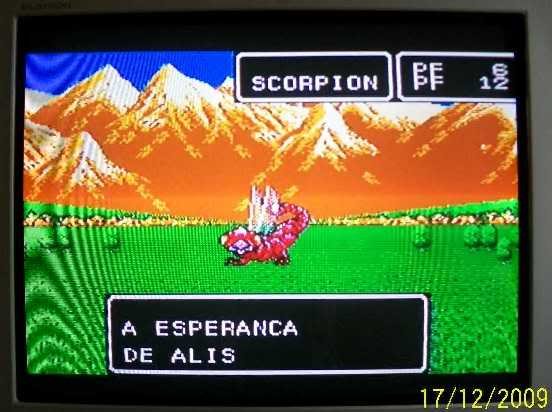
Ok, hora de fazer a prova. Desliguei o console e liguei novamente. Opção "continua"...
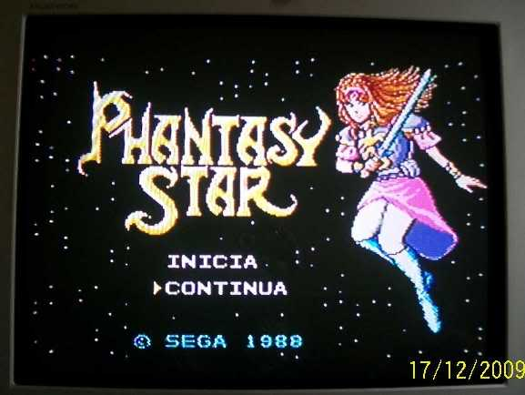
Lá vem Nero contar a história novamente. Oh-oh... parece que não há mais arquivo. Que pena...
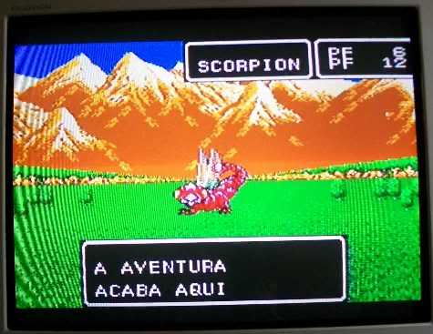
Não há outra solução, a não ser violar o cartucho (se bem que não notei o lacre). Mas é por uma boa causa.O visual da carcaça era razoável. Opa! um pouco de zinabe na parte de trás do circuito. Não acho que houvesse problema causado por isso ainda, já que tinha pouco zinabe, mas não era nada agradável ver aquilo. Um banho de isopropílico, com o auxílio do cotonete e de sua haste, deixaria tudo muito bonito de se ver, novamente.
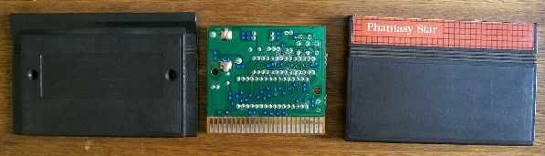
Parte da frente. Ah.... lá está a tal bateria, que alguns parecem acreditar que é nela que ficam as informações de save. Ah.... olha lá quanto espaço entre o pólo negativo e seu contato.... É ela que vibra quando se balança o cartucho.... Hmmm... interessante. Parece que o problema é simples de resolver.
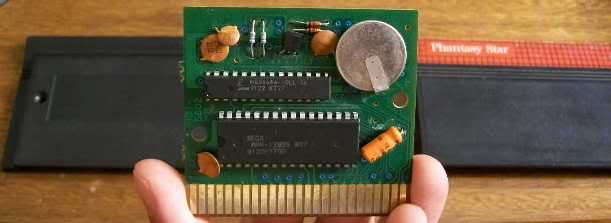
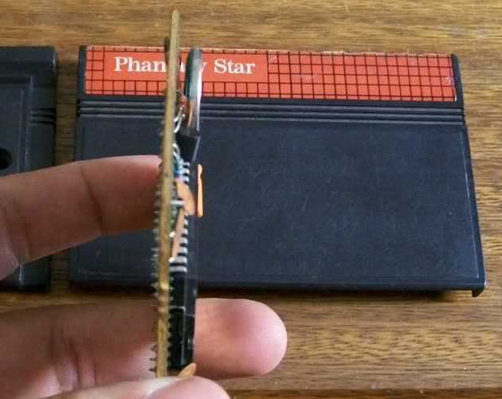
Hmm... Sony CR 2032. Tenho uma dessas guardada para a memória do Saturn, e para a memória da BIOS de algumas placas mãe aqui em casa... poderia servir aqui. Mas... se ela está SEM contato, ela deve estar MENOS descarregada que as baterias dos Phantasy Stars que circulam por aí salvando normalmente... O contato do pólo negativo estava bem achatado junto à placa. Um estilete conseguiu puxar a chapinha com facilidade. Parece que normalmente essa chapinha seria soldada à bateria, mas não vou arriscar mexer com solda aqui. Uma solução bem mais simples era viável, já que a outra chapinha estava bem presa ao pólo positivo.
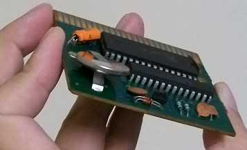
Usando-me da Física dos materiais, decidi tornar a chapa do contado do pólo negativo uma mola. Assim, apenas por pressão, o contato seria mantido. A carcaça dianteira do cartucho garantiria que a bateria não se afastasse da placa o suficiente para desfazer o contato do pólo negativo.
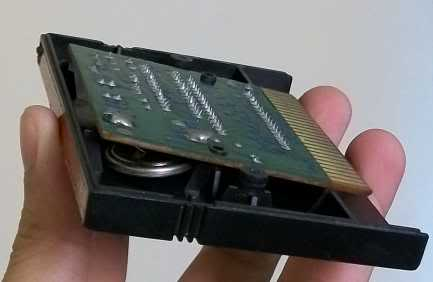
Vamos lá, Sonic, dá uma licencinha agora (eu deixei o jogo rolando na fase 3, das cachoeiras. Estava com saudade do cenário e sua música... bem que Sonic estranhou ficar parado ali. Pela cara, não gostou muito).
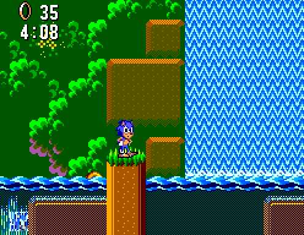
Alis entra em cena denovo, e sai invadindo a casa de todo mundo em Camineet outra vez, se aproveitando da amnésia do sistema Algol até para ganhar todos os presentes mais uma vez... Na igreja, ela reza novamente para que tudo dê certo.
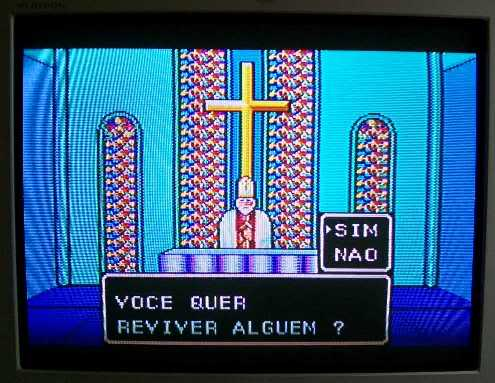
Jogo salvo, vamos à luta! Depois de massacrar alguns fracos e roubar-lhes suas poucas mesetas (não sei para quê os monstros têm mesetas, eles não podem ir às lojas...), novo save. O arquivo estava lá, claro. Bom, momento de ver se o tratamento curou a amnésia de todo o sistema de Algol. Desliga - Liga - Continua...
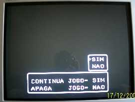
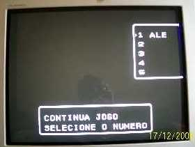
Está lá!!!! Legal!!! Hehe, agora o esforço de Alis não será mais em vão!!! Diante
do funcionamento normal do cartucho, o conserto do outro (troca da
carcaça) ficou adiado para quando eu achar um cujo circuito realmente
não tenha mais salvação e, de preferência, tenha o mesmo tipo de carcaça
traseira, o que não era o caso desse que consertei.
Bom, pelo menos um final foi feliz, para o sistema Algol.